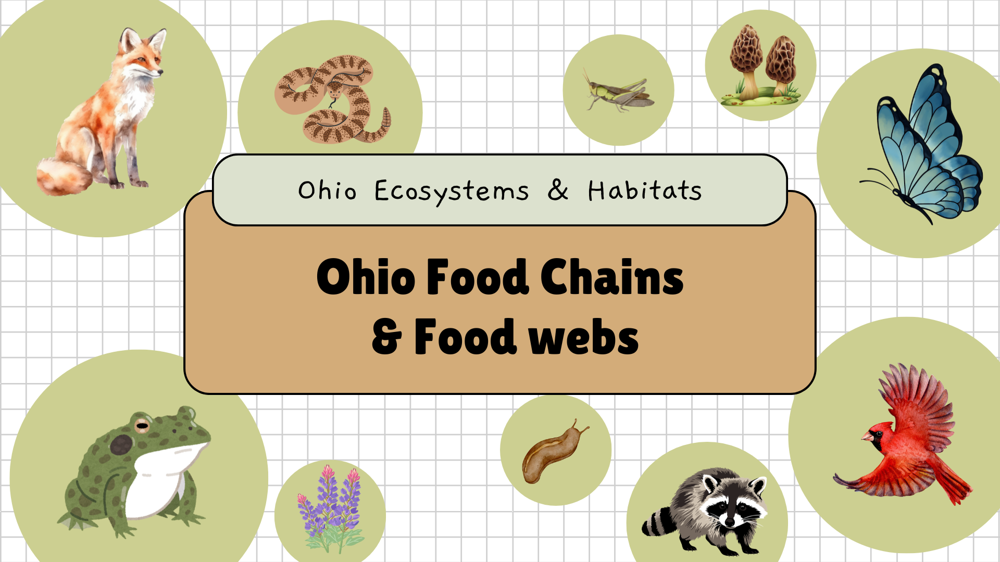
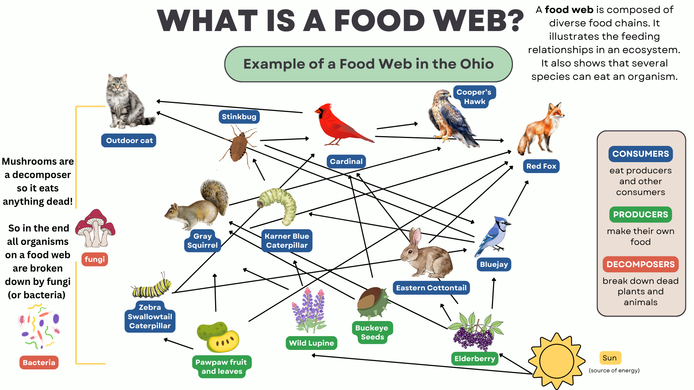

Student Sandbox Module: Chains, Webs, & Trophic Energy Thermodynamics
🔬 Part 1: Unit Presentation Slides
Use the control deck below to review food web structures, vocabulary terms, and the 10% thermodynamic law.

Slide File Loading Error: Ensure your images are named slide1.png through slide14.png'">
Slide 1 / 14
⚡ Midpoint Checkpoint: Web Interconnectivity
Demonstrate an understanding of foundational web concepts before initiating structural fracture options.
Q: Look closely at Slide 4. Why does the Eastern Cottontail Rabbit have arrows pointing away from it toward BOTH the Red Fox and the Cooper's Hawk?
A) It means the rabbit actively hunts the fox and hawk for energy.
B) It indicates the rabbit serves as an integrated primary energy choice for multiple predatory niche lines in the community web.
C) It proves that rabbits belong to the apex predator classification tier.
🕸️ Part 2: Trophic Structural Sandbox (Web Fractures)
Click on any marked dashed interactive box directly on the ecosystem canvas to knock that organism out of the web.

[Ensure slide4.png is in your repository folder]'">
Real-Time Ecological Assessment Log:
SYSTEM STATUS: Dynamic equilibrium achieved. Select any structural organism coordinate link in the schematic map canvas above to isolate or fracture system performance.
🔺 Part 3: Thermodynamic Energy & The 10% Rule Calculator
Toggle between the trophic categories to watch the mathematical value change. See how energy is lost as heat as you move up the pyramid tiers.
At the foundational tier, the autotroph producers capture light photons from the sun to synthesize stable chemical bonds, outputting a reference level of 10,000 kcal of biomass energy.
🎓 Part 4: Cumulative Content Mastery Assessment
Answer the following questions selected at random from our class biology bank.